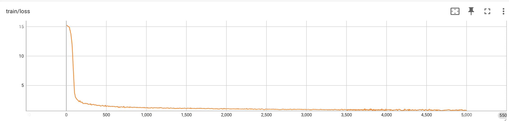
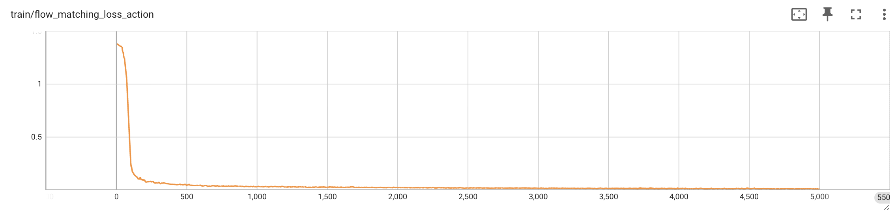
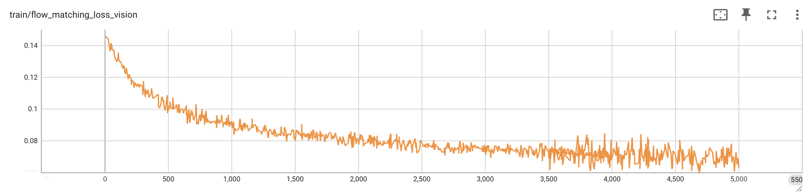
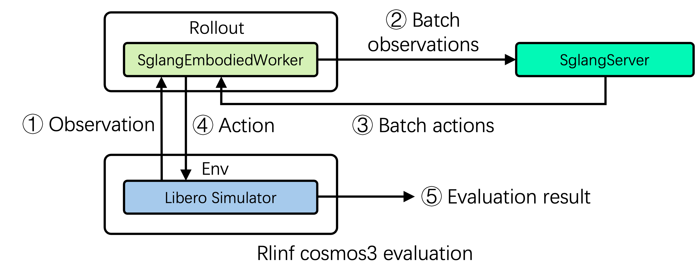
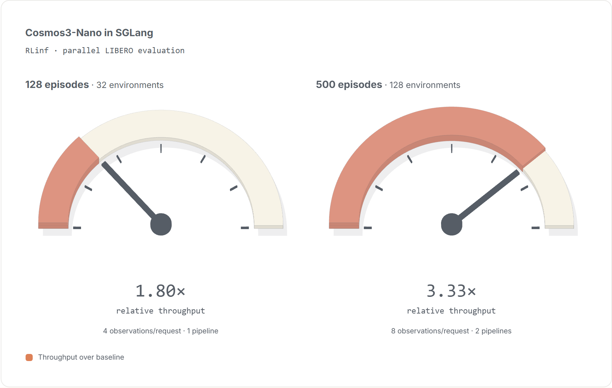

具身智能模型持续演进，模型本身只是完整开发链路里的一环。一个新的World Action Model（WAM）从模型接入、训练，到推理与仿真评测，都需要一套能快速适配、又能高效跑满的基础设施。
RLinf此前已经支持DreamZero这类世界模型，这次接入NVIDIA Cosmos 3，并以SGLang-Diffusion（下称SGLang）作为推理后端，把SFT、推理服务与仿真评测串成一条端到端链路。Cosmos3-Nano在RLinf上的SFT训练精度对齐官方实现，而强化后的SGLang多批推理与流水线并行评测，把评测吞吐拉到3.33倍。
以这次Cosmos3-Nano接入为例，梳理从微调到高吞吐并行评测这条路径上的关键设计决策，以及RLinf的流水线调度如何继续推高评测效率。
Cosmos3是NVIDIA的全模态模型，能原生理解和生成文本、图像、视频、环境音频与动作，目标是提供统一的多模态能力，建模物理世界并生成动作。
架构上，Cosmos 3采用Mixture-of-Transformers（MoT）双塔设计，由自回归Transformer与扩散Transformer组成。
● 自回归Transformer负责多模态理解与推理。
● 扩散Transformer负责多模态内容生成。
两座塔共享统一的注意力层与3D mRoPE（3D多模态旋转位置编码）位置表示，让模型能在多种模态之间建立共享的时空表示，并跨模态边界建模时空结构。
Cosmos 3有Edge、Nano、Super三种尺寸。下面描述的整套训练与评测都使用Cosmos3-Nano。
Cosmos3-Nano是一个16B参数的MoT模型，核心沿用Qwen3-VL-8B的架构：36层Transformer、hidden size 4096、32个注意力头、8个KV头。
Cosmos3-Nano并不是完全从零训练。自回归Transformer直接复用Qwen3-VL-8B的预训练权重，扩散Transformer则由Qwen3-VL-8B的权重初始化，并在Cosmos3的训练过程中继续优化。
目前Cosmos3在RLinf里的技术配置如下：
● SFT训练跑在RLinf已有的FSDP2训练后端上。
● 评测使用SGLang作为推理后端。
Cosmos3是一个相当复杂的新多模态与动作模型，接进一套已有的具身训练框架本身就是有代表性的工程实践：RLinf要支持的不再是常规推理任务，而是覆盖多模态理解、动作生成与仿真评测的完整具身工作流。
Cosmos3是一个OmniMoT模型，架构已经在NVIDIA的cosmos-framework里开源。对于一个已经有完整官方实现的新模型，接入成本最高的一环不是“能不能跑起来”，而是在不额外维护第二份模型实现的前提下，接进已有的训练框架。
RLinf没有重写Cosmos3的模型架构，而是把Cosmos3当作外部的Hugging Face模型，通过一层适配器引入。
模型的构建与初始化仍然由Cosmos自己的配置系统负责，RLinf只是在模型外面加了一层薄封装，把Cosmos3的接口映射到RLinf的接口上。
Cosmos3的SFT跑在RLinf已有的FSDP2训练后端上，不需要为Cosmos3单独搭一套训练循环，checkpoint的保存与加载、日志和监控都复用RLinf现有机制。
核心价值：尽可能完整复用Cosmos3的官方实现，不必在RLinf里再写一份模型代码。
模型适配与训练框架解耦之后，后续模型有了一条更干净、成本更低的接入路径：直接复用现有训练栈，不需要改动RLinf的训练后端。
数据集用的是NVIDIA开源的LIBERO_LeRobot_v3，包含机器人操作任务的多模态轨迹数据：主视角与腕部相机的RGB图像、机器人状态（8维），以及对应的机器人动作（7维）。动作表示为3维平移 + 3维轴角旋转 + 夹爪。
加载LIBERO_LeRobot_v3之后，Cosmos3在数据处理阶段即时转换并归一化动作表示：原始的3维轴角观测转成6维旋转表示（Rot6D），原始的7维动作转成10维动作表示，再做分位数归一化。
相比轴角，Rot6D避开了 ±π 附近的不连续，动作空间表示更平滑连续，扩散模型更容易稳定学到动作分布，生成的机器人动作质量也更高。
当前SFT实验使用的是NVIDIA官方LIBERO_LeRobot_v3数据集，视频以10 FPS录制。换成其他LIBERO数据集或自建数据集时，要留意帧率和相关超参数是否仍与当前Cosmos3配置匹配。
Cosmos3在RLinf上跑5000步SFT的结果如下（与官方Cosmos3实现https://github.com/NVIDIA/cosmos对齐）：



在LIBERO_LeRobot_v3上跑完5000步SFT后，Cosmos3-Nano的整体训练loss稳定收敛，说明RLinf上的Cosmos3-Nano接入能有效学到LIBERO数据里的视觉分布与动作分布。
Cosmos3-Nano在LIBERO_LeRobot_v3上微调完成后，下一步就是在仿真里评测训练好的模型，验证实际生成机器人动作的效果。
RLinf目前支持用SGLang作为Cosmos3评测的推理后端，SGLang作为独立的推理服务运行，负责模型推理和并发请求处理。在RLinf这一侧，每个计算组件由一个Worker管理，Worker负责该组件的生命周期，以及与其他组件之间的数据交换。
关键设计决策：RLinf不接管SGLang内部的推理调度。
SGLang本身已经有成熟的推理优化、自己的Router和请求调度。RLinf再在上面叠加生命周期管理或调度，可能干扰SGLang自身的调度，拖累推理性能。
RLinf因此采用非侵入式的SGLang Worker架构：
● RLinf负责任务编排与数据流。
● SGLang负责推理及其自身调度。
SGLang Worker在初始化时启动SGLang推理进程，之后主要负责RLinf与SGLang之间的数据适配和请求转发，不介入SGLang内部的模型推理与请求调度。
当其他Worker发起推理请求时，SGLang Worker先把输入转换成SGLang期望的格式，直接发给SGLang服务，然后等待推理任务完成。推理结束后，SGLang Worker取回模型输出、转换回来，再交给下一个Worker。整个过程中，RLinf都不干预SGLang内部的模型推理、请求调度和Router机制。
RLinf的任务调度与SGLang的推理调度就此解耦：RLinf掌握整体任务流，SGLang掌握自己的推理效率，两套系统集成干净，SGLang已有的推理优化也完整保留。
仿真和推理属于同一条任务链，吃的算力却不一样：Cosmos3的LIBERO评测里，LIBERO模拟器主要用CPU做环境仿真，SGLang用GPU做模型推理。两者严格串行时，仿真与推理阶段之间会出现明显空转，CPU和GPU都没吃满。
问题因此从“模型能不能跑起来”，变成了：怎么让不同的计算阶段真正并行起来？
做法是评测流程里的流水线执行机制：给定一批评测任务，拆成多个batch放到多条流水线上，让不同batch在各Worker之间交错执行，尽可能把LIBERO仿真和SGLang推理重叠起来。

以LIBERO-10为例：单台8卡服务器上跑一次完整评测，覆盖10个任务 × 50个demo = 500个episode。
RLinf会启动128个并行仿真环境，每个环境负责4个仿真任务；任务数无法被并行环境数整除时，用任务补齐保持并行执行宽度不变。128个环境均匀分布在8张GPU上，每张卡16个，并行执行。这128个并行环境还可继续拆成N条流水线，每条流水线处理128 // N个环境：流水线内部，任务依次经过LIBERO仿真、SGLang推理、LIBERO动作执行；流水线之间则按流水线方式交错调度。
1 LIBERO模拟器先并行运行各个环境，收集当前观测。
2 RLinf把多个环境的图像等观测拼成一个batch，发给SGLang。
3 SGLang用多批、高并发的推理能力同时处理大量请求，生成对应的下一步动作。
4 RLinf取回推理结果，把每个动作送回对应的LIBERO环境执行，环境再产生下一步观测，进入下一轮推理。
这个循环一直重复，直到所有episode评测完成。
评测过程由此变成并行LIBERO仿真、RLinf流水线调度与高并发SGLang推理之间的协作：CPU上的环境仿真与GPU上的模型推理在时间上重叠，计算阶段之间的等待被压缩，硬件利用率和评测吞吐同时提高。
把RLinf的流水线调度与SGLang的高并发推理结合，对当前的Cosmos3仿真评测负载做了优化，端到端结果如下：

| 每个请求的观测数 | pipeline_stage_num | 相对吞吐 |
|---|---|---|
| 1 | 4 | 1.00x |
| 2 | 2 | 1.66x |
| 4 | 1 | 1.80x |
第一列是每个请求打包发给SGLang的观测数，pipeline_stage_num是任务被拆成的流水线数量，两者乘积保持恒定。完整500集评测的吞吐达到单批基线的3.33倍。
| 每个请求的观测数 | pipeline_stage_num | 相对吞吐 |
|---|---|---|
| 1 | 16 | 1.00x |
| 2 | 8 | 1.70x |
| 4 | 4 | 2.67x |
| 8 | 2 | 3.33x |
| 16 | 1 | 2.33x |
接入Cosmos3从来不只是让RLinf“多支持一个模型”。这次工作里，Cosmos3在RLinf里成了一条完整链路，覆盖模型接入、SFT训练、SGLang推理与仿真评测，展示的不是对某一个模型的支持，而是RLinf怎么以轻量方式持续接入不断演进的具身模型，把训练、推理、评测融进一条端到端流程，再用系统级调度把整体效率往上推。
对具身AI来说，基础设施的价值同样不止于“让模型跑起来”，而在于把模型、训练、推理、仿真和任务执行组织成一个能协同高效运转的系统，这也是RLinf在具身AI与Agent基础设施上持续推进的核心方向。
想了解更多，可以访问RLinf仓库：https://github.com/RLinf/RLinf（欢迎点星、关注与反馈）
Cosmos3 SFT文档：https://rlinf.readthedocs.io/en/latest/rst_source/examples/embodied/sft_cosmos3.html
Cosmos3 SGLang评测文档：https://rlinf.readthedocs.io/en/latest/rst_source/evaluations/guides/cosmos3_sglang.html
参考：https://www.sglang.io/blog/rlinf-sglang-cosmos3